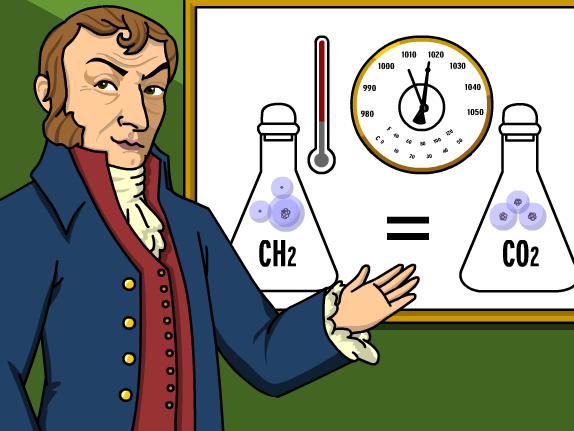

AMEDEO AVOGADRO
Our Genius Founder
ACCOMPLISHMENTS
In honor of Avogadro's contributions to molecular theory, the number of molecules in one mole was named "Avogadro's number", NA or "Avogadro's constant". It is approximately 6.0221409×1023. Avogadro's number is used to compute the results of chemical reactions. It allows chemists to determine amounts of substances produced in a given reaction to a great degree of accuracy.

Johann Josef Loschmidt first calculated the value of Avogadro's number, often reIn honor of Avogadro's contributions to molecular theory, the number of molecules in one mole was named "Avogadro's number", NA or "Avogadro's constant". It is approximately 6.0221409×1023. Avogadro's number is used to compute the results of chemical reactions. It allows chemists to determine amounts of substances produced in a given reaction to a great degree of accuracy.
Johann Josef Loschmidt first calculated the value of Avogadro's number, often referred to as the Loschmidt number in German-speaking countries (Loschmidt constant now has another meaning).
Avogadro's Law states that the relationship between the masses of the same volume of all gases (at the same temperature and pressure) corresponds to the relationship between their respective molecular weights. Hence, the relative molecular mass of a gas can be calculated from the mass of sample of known volume.
Avogadro developed this hypothesis after Joseph Louis Gay-Lussac had published in 1808 his law on volumes (and combining gases). The greatest problem Avogadro had to resolve was the confusion at that time regarding atoms and molecules. One of his most important contributions was clearly distinguishing one from the other, stating that gases are composed of molecules, and these molecules are composed of atoms. For instance, John Dalton did not consider this possibility. Avogadro did not actually use the word "atom" as the words "atom" and "molecule" were used almost without difference. He believed that there were three kinds of "molecules," including an "elementary molecule" (our "atom"). Also, more attention was given to the definition of mass, as distinguished from weight. ferred to as the Loschmidt number in German-speaking countries (Loschmidt constant now has another meaning).
Avogadro's Law states that the relationship between the masses of the same volume of all gases (at the same temperature and pressure) corresponds to the relationship between their respective molecular weights. Hence, the relative molecular mass of a gas can be calculated from the mass of sample of known volume.
Avogadro developed this hypothesis after Joseph Louis Gay-Lussac had published in 1808 his law on volumes (and combining gases). The greatest problem Avogadro had to resolve was the confusion at that time regarding atoms and molecules. One of his most important contributions was clearly distinguishing one from the other, stating that gases are composed of molecules, and these molecules are composed of atoms. For instance, John Dalton did not consider this possibility. Avogadro did not actually use the word "atom" as the words "atom" and "molecule" were used almost without difference. He believed that there were three kinds of "molecules," including an "elementary molecule" (our "atom"). Also, more attention was given to the definition of mass, as distinguished from weight.